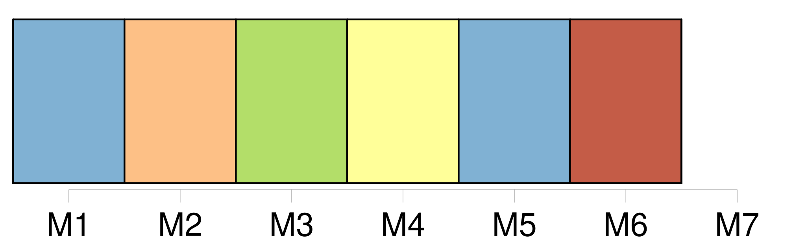
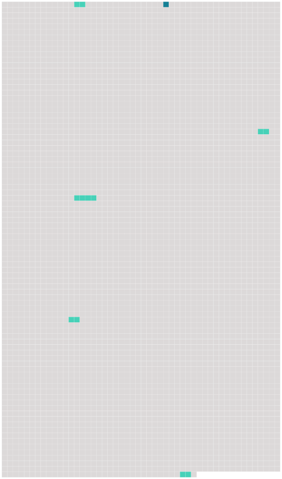

Longueur nb maillons : 6 mentions |
 |
— Il n’ y a pas fort longtemps que monsieur de Lanty possède [cet hôtel] ? [1 phrases]
Voici bientôt dix ans que le maréchal de Carigliano [le] lui a vendu … [54 phrases]
La première fois qu’ il se montra dans [l’ hôtel] , ce fut pendant un concert, où il semblait avoir été attiré vers le salon par la voix enchanteresse de Marianina. [21 phrases] Ce personnage franchissait -il le seuil de l’ appartement qu’ il était censé occuper à [l’ hôtel de Lanty] , son apparition causait toujours une grande sensation dans la famille. [44 phrases] Comme elle venait pour la première fois dans [cette maison] , je lui pardonnai son rire étouffé ; mais je lui fis vivement je ne sais quel signe impérieux qui la rendit tout interdite et lui donna du respect pour son voisin. [55 phrases]
Pourquoi madame de Lanty laisse-t -elle errer des revenants dans [son hôtel] ? |
 |
Il est possible de télécharger la ressource sur la page Ortolang |
Si vous avez des questions ou vous voyez des erreurs, merci d'envoyer un mail à silvia.federzoni89@gmail.com |